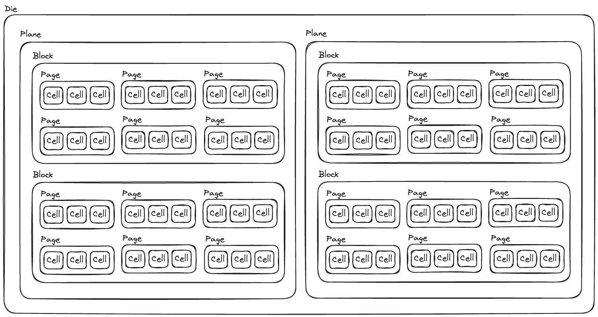
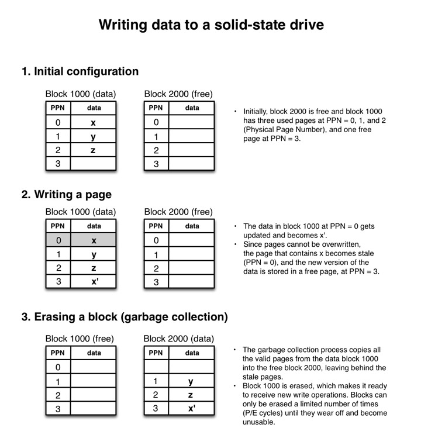

참고한 것들
이게 무언가?
- 반도체 소자를 이용해 전기적으로 읽고 (read) 쓸 (write, program) 수 있는 저장장치를 말한다.
- 하나의 비트는 Floating-gate 트랜지스터로 구성된 셀에 저장되며 여기에 전압을 가해 bit 를 읽거나 쓰게 된다.
구조

Host Interface
- Host Interface 로 부터 호스트 (가령 OS) 의 요청이 들어오게 된다. 조립컴 살때 종종 보이는 SATA 나 PCIe 가 여기에 속한다.
- SATA 3.0 는 대략 550Mb/s, PCIe 3.0 는 1 lane 당 1Gb/s 의 속도를 낸다. (보통은 4, 8 lane 으로 구성된다)
- 대부분의 SSD 는 처리 속도가 550Mb/s 보다는 크기에, SATA 3.0 을 사용하는 것은 Host Interface 에의 병목이 생기게 된다.
Flash memory package
- Flash memory package 가 실제 정보 저장을 위한 반도체 소자이다.
- 요놈의 구조를 하나씩 살펴보자.

- Bit 를 저장하는 최소단위인 cell 이 있고
- Cell 이 모여 page 가 되고
- Page 는 Read/Write operation 의 데이터 크기 단위이다. (Read/Write by Page)
- Page 가 모여 block 이 되고
- Block 은 Erase operation 의 데이터 크기 단위이다. (Erase by Block)
- Block 이 모이면 plane 이 되고
- Plane 은 Read/Write operation 의 단위이다.
- Plane 별로 register 가 존재하고, read 한 데이터는 이 register 에 채워진 후 SSD controller 에 보내지며 write data 또한 이 register 에 채워진 후 page 에 저장된다.
- Plane 이 모이면 die 가 되고
- 이 die 들이 하나의 chip 을 구성하게 된다
SSD Controller, RAM, Channel
- SSD 의 컨트롤러에도 나름의 Processor 와 RAM 이 있다.
- Processor 는 명령어를 받아서 Flash Controller 로 보내고
- RAM 은 매핑 정보를 저장하거나 캐시로 쓰인다.
- Flash Controller 는 실제 반도체 소자인 Flash Memory Package 와 Channel 로 연결되어 제어하게 된다.
Operation 상의 특징들
Read/Write by Page
- Read, Write (혹은 program 이라는 용어도 쓴다) 작업은 page 단위로 이루어 진다.
- 사용자 입장에서 하나의 byte 만 읽고 쓰는건 가능하다. 하지만 이 요청이 SSD 레벨로 가게 되면 동일하게 page 전체를 r/w 하고 나머지는 버리게 된다.
- Page 에 부분적으로 write 할 수는 없다. 즉, write 하려는 데이터가 page 사이즈보다 작을 경우 나머지 공간은 그냥 빈공간으로 남고 그 공간에 이어서 write 할 수는 없다. (이러한 경우도 WA 에 속한다.)
Erase by Block
- Erase 작업은 page 들을 그룹한 단위인 block 단위로 이루어 진다.
- 이때 block 에 있던 기존에 write 된 page 들은 다른 곳으로 옮겨 가게 되는데, 이 작업을 GC 라 한다.
- Erase 작업을 하게 되면 해당 block 의 모든 page 가 free 상태가 된다.
- Erase 를 page 단위가 아닌 더 큰 block 단위로 하는 이유는 비용때문에 설계를 그렇게 했기 때문이다.
- 간단히 말하자면, erase 를 위한 회로를 page 마다 넣는 것이 비용상 비효율적이기 때문.
- 자세한 설명은 여기 에서 해준다.
Free Page Write, Non-overwritable
- Write 는 free page 에서만 가능하다.
- 따라서, page overwrite (in-place update) 가 불가능하다: 이전에 write 된 적이 있는 page 는 free page 가 아니기 때문에 write 가 불가능한 것.
Read-modify-write

Page 를 수정하고 이후 erase (gc) 하는 과정 정리 이미지 (출처)
- Page 는 in-place update 가 안되기에, 내용을 변경하고자 할 때에는 다음과 같은 방법을 사용한다.
- 기존의 페이지는 stale 혹은 invalid 상태로 바꾸고,
- 해당 페이지를 레지스터 (아마 SSD Processor 안에 있는?) 로 옮겨서 수정을 한 뒤에,
- 새로운 free page 에 write 하게 된다.
- 이 과정은 Read-Modify-Write 라고 부르기도 한다.
- 이후 이 stale 페이지는 GC 과정에서 정리된다.
P/E Cycle Limit (문서 분리: PE Cyclen Limit)
- SSD 는 전기 소자의 특성때문에 r/w 횟수에 제한이 있다.
종류 (문서 분리: Multi Level Cell)
- SSD 는 Cell 하나가 몇개의 bit 를 표현할 수 있냐에 따라 SLC (Single), MLC (Multiple), TLC (Triple), QLC (Quadra) 등으로 나눌 수 있다.
- SLC 로 갈수록 용량은 줄어들지만 성능과 수명은 좋아진다.
벤치마킹
- SSD 의 경우 최악의 성능을 테스트하기 위해 부하를 미리 걸어 놓는 Pre-conditioning 을 사용하기도 한다.
- 하지만 이것이 반드시 서비스 환경에서의 성능을 반영한다고 말할 수는 없다. 랜덤 읽기 쓰기 이기 때문에 실 서비스 환경과는 당연히 차이가 있기 때문.
- 실 서비스의 데이터 특성을 고려한 자체개발 (in-house) 테스트 툴을 사용하는 것이 (물론 뭐 여유가 된다면) 좋다고 하더라.
- 벤치마킹을 수행할 때에는 여러 파라미터 (설정값 정도로 생각하자) 들을 주입하는데, 대표적으로는:
- 워크로드 타입
- “주입되는 데이터의 특성” 정도로 생각하면 된다. 데이터가 application 에서 생성하는 특정 패턴 (뭐 json log 등의) 을 따르는지, 아니면 sequential, random r/w 인지 등
- 읽기/쓰기 비율
- 이건 뭐 말 그대로… 읽기와 쓰기를 어떤 비율로 해서 벤치마킹을 하는지
- 큐 길이
- 동시성과 관련된 것이다. 동시에 몇개의 프로세스 혹은 스레드가 부하를 거는지
- 데이터 청크 길이
- Input 혹은 output 작업 1회 수행시 처리되는 양
- 워크로드 타입
- 또한 이런 벤치마킹 결과는 다음과 같은 메트릭 (뭐 단위 정도로 생각하자) 으로 정량적인 결과를 산출한다:
- 벤치마킹의 결과를 해석할 때는, (각 메트릭들은 SSD 의 성능을 각기 다른 시선에서 수치화하기 때문에) 이러한 메트릭을 정확하게 이해하고 분석하는게 좋다고 한다.